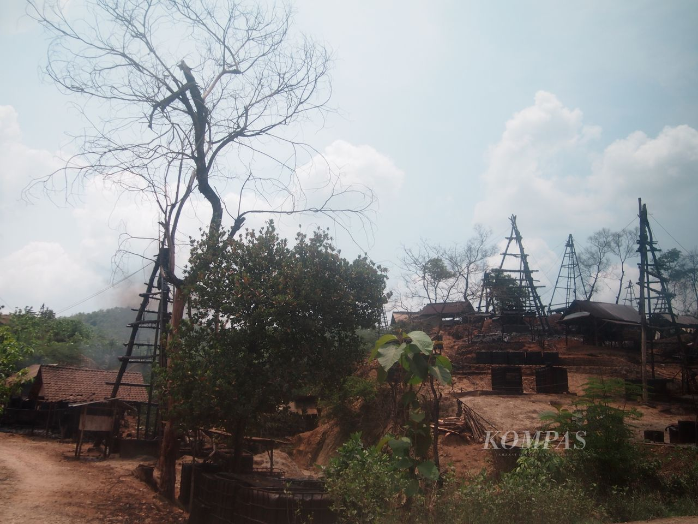
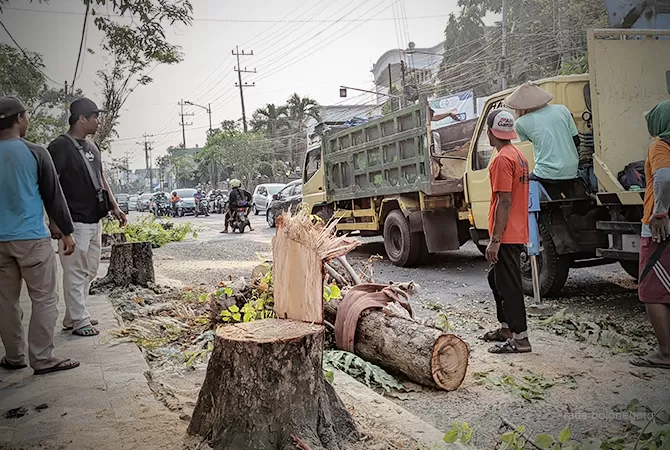

Banjir
Puluhan desa di Kabupaten Bojonegoro, Jawa Timur, terendam banjir luapan Sungai Bengawan Solo setinggi 50 cm hingga 1 meter. Kepala Badan Penanggulangan Bencana Daerah (BPBD) Kabupaten Bojonegoro, Laela Noer Ainy mengatakan, ada sekitar 36 Desa saat ini terdampak banjir luapan Sungai Bengawan Solo.
11 Maret 2024

Tambang minyak ilegal
Pengeboran dan penambangan ilegal dari sumur-sumur minyak yang dikelola secara tradisional oleh warga di Bojonegoro, Jawa Timur, diduga marak. Seharusnya sumur yang ditambang warga sebanyak 222 titik sumur, tetapi saat ini terdata 494 sumur. Selain menambang sumur minyak, warga juga ada yang menyuling minyak mentah diolah menjadi bahan bakar solar. Pengeboran dan penyulingan ilegal tanpa izin rawan memicu bahaya kebakaran ataupun pencemaran lingkungan.
7 Maret 2018

Penebangan 718 Pohon di Kota Bojonegoro Untuk Enam Titik Proyek, Begini Kata Pegiat SUKET
Penebangan Pohon yang beradat di trotoar atau pinggir jalan seputaran Kota Bojonegoro karena akan dilakukannya pembangunan proyek trotoar dan drainase, sehingga sebanyak 718 pohon peneduh harus ditebang Kepala Dinas Lingkungan Hidup (DLH) Bojonegoro Dandy Suprayitno kepada awak media mengatakan, bahwa semua pohon tersebut sudah dilakukan lelang berdiri, dan setelah ditebang pohon tersebut dibawa oleh pembelinya.
21 juli 2023